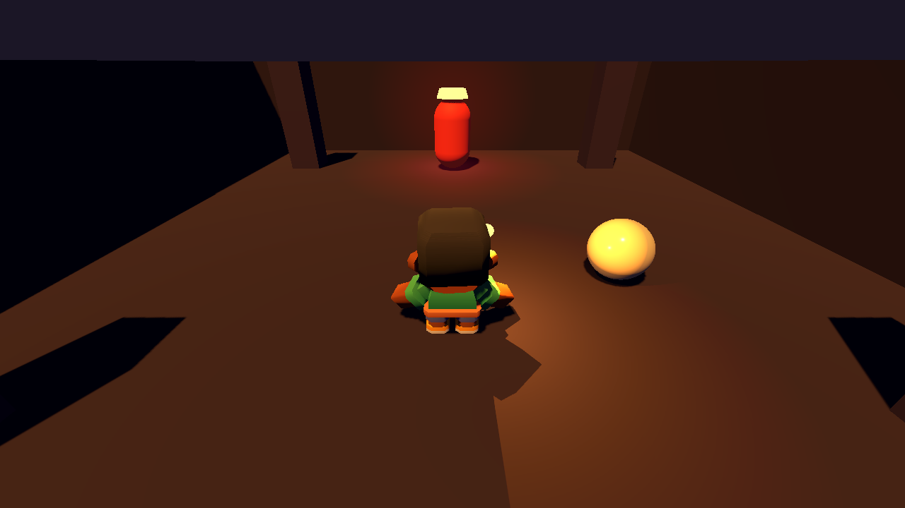
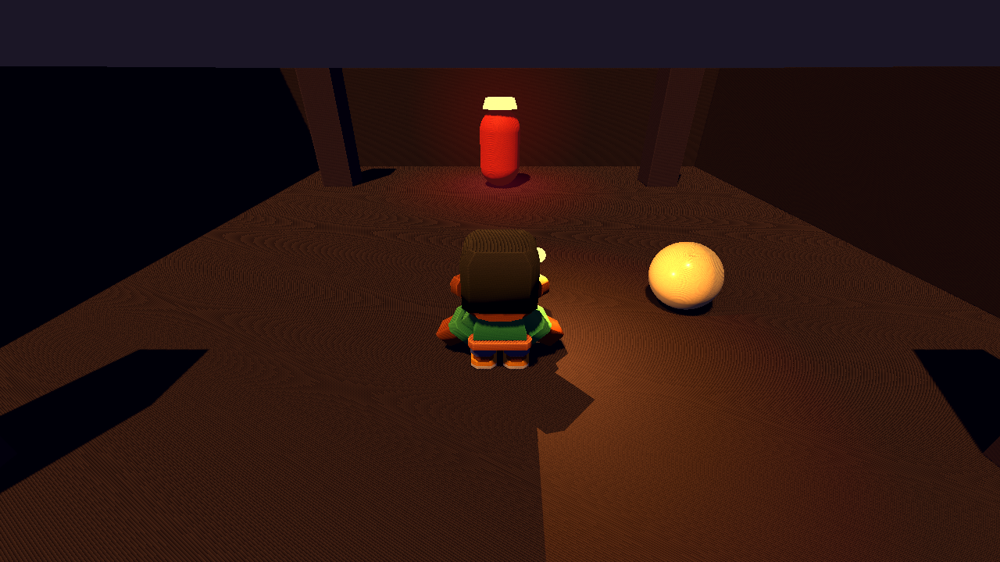
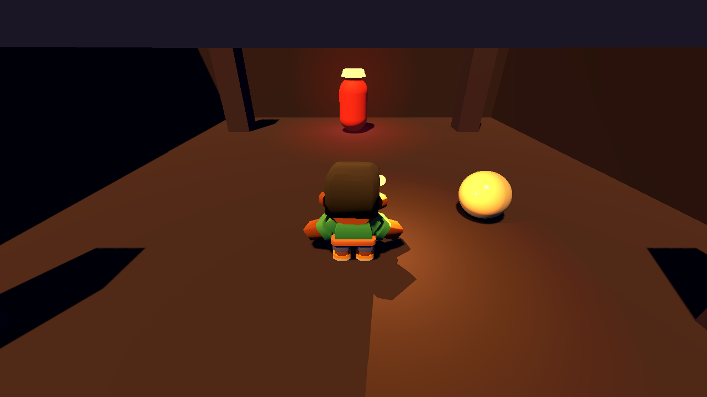
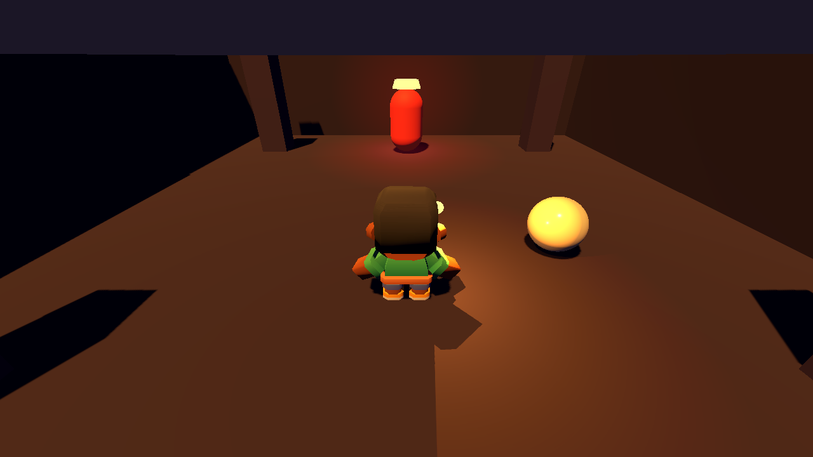
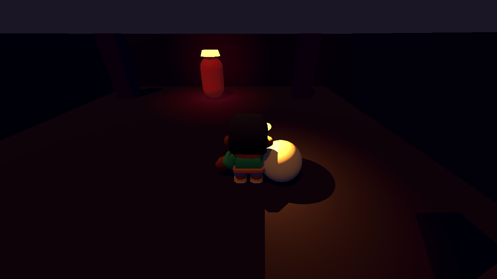
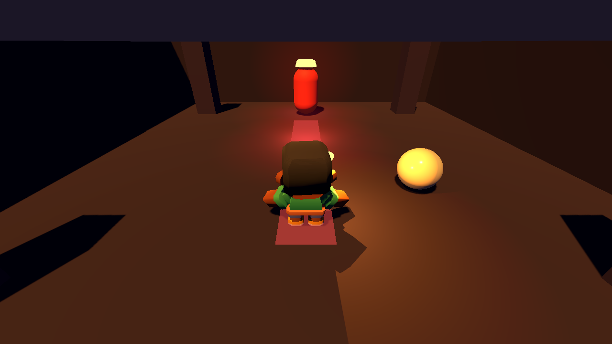
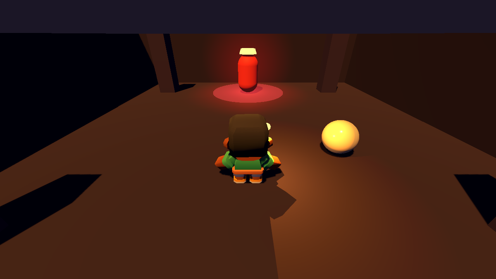

| Estudiante | Bryan Smith Mejía Poveda |
| Equipo | Pixel Dungeon Lite — Grupo Nocturna |
| Integrantes | Barriga Castro Isaac Leonardo · Gómez Valbuena Diego Alejandro · Mejía Poveda Bryan Smith |
| Juego | Pixel Dungeon Lite (pixel art 32 × 32; jefe 64 × 64) |
| Usuario de GitHub | bryanmejia0410 |
| Repositorio | https://github.com/Tairacx/Pixel-dungeon-lite |
| Tarea | C — La luz del jugador, las sombras y su costo |
| Archivos entregados | luz_jugador.gd · zona_c.tscn · capturas/ |
| Escena de la zona | res://zona_c.tscn — la sala del jefe |
| Motor | Godot 4.7.2 stable (GL Compatibility) |
| Rama local | tarea-c-bryan (no se hizo push a main) |
| Fecha | 2 de noviembre de 2026 |
Documento de entrega individual. El código y las capturas están en la rama local del repositorio; el main remoto no recibió cambios de esta entrega.
Este documento resuelve la Actividad C del Taller 4 sobre el repositorio del equipo: los archivos de la tarea en la rama local tarea-c-bryan y este documento con las cuentas, el código, las capturas, las predicciones y las respuestas.
| Elemento | Detalle |
|---|---|
| Nombre completo | Bryan Smith Mejía Poveda |
| Equipo y juego | Pixel Dungeon Lite — Grupo Nocturna |
| Usuario de GitHub | bryanmejia0410 |
| URL del repositorio | https://github.com/Tairacx/Pixel-dungeon-lite (repositorio privado; se accedió con las credenciales locales de Git) |
| Tarea | C — La luz del jugador, las sombras y su costo |
| Archivos escritos | luz_jugador.gd (script de la antorcha y funciones puras) y zona_c.tscn (sala del jefe con las tres luces, sombras, cámara y avisos de ataque) |
| Escena | res://zona_c.tscn |
| Cómo abrir | Godot 4.7.2 → Import → seleccionar la carpeta del repositorio → abrir zona_c.tscn → F6. Controles: WASD para mover al héroe; clic derecho sostenido para girar la cámara. |
| Commits locales | 59adabb — Tarea C nivel 1: la antorcha del jugador y la sala del jefe.66b3a3f — Tarea C nivel 2: bias de sombras y avisos de los dos ataques.El commit de este documento cierra la entrega. Todos son de bryanmejia0410 y están solo en la rama local. |
main remoto. El repositorio se clonó en el commit 99f8020 (Tarea B), se creó la rama local tarea-c-bryan y allí se hicieron los tres commits. Ningún commit de esta entrega está en el remoto.| #1B1626 vacío |
#3F3552 piedra |
#F2A33A luz / antorcha |
#D63A3A peligro |
#E8DCC0 héroe |
#3F3552 y fondo #1B1626.#E8DCC0) con cámara en tercera persona y una antorcha OmniLight3D #F2A33A que lo acompaña; radio útil de 3 m, Range 5.0 para compensar el apagado del motor, energía 2.5 y atenuación 2 (1/d²).(0, 0, −5.2), con su luz con vida #D63A3A, energía 2.0, Range 5.5 y sombra.#F2A33A, energía 0.80, cuatro cascadas de sombra, Bias 3 y Normal Bias 6.| Concepto | Qué es | Cómo aparece en la tarea C |
|---|---|---|
| Función pura | Recibe números y devuelve números; no toca la escena. Se puede probar con print. | LuzJugador.atenuacion(d, exp) y LuzJugador.blinn_phong(n, l, v, brillo). |
| Estado que cambia con el tiempo | Una variable que avanza con delta para no depender de los FPS. | La energía de los avisos del jefe (0 → 2.8 → 0) y la energía de la antorcha; la escena no usa randf() ni cuentas por frame. |
| Jerarquía / composición | Un nodo hijo hereda la transformación del padre; el padre no necesita actualizar al hijo cada frame. | LuzJugador es hija de Personaje: al mover al héroe, la antorcha se mueve con él sin una línea de seguimiento. |
| Señal (evento) | Un aviso: “pasó esto”. Quien avisa no sabe quién escucha. | En la demo el AnimationPlayer Ataques hace de presentación; la mecánica del jefe no conoce la luz. En el juego real, el jefe emitiría un aviso y la luz, el sonido y la cámara escucharían (ver 2.4 y 8.b). |
| Clase | Responsabilidad | Estado | Interfaz pública | Quién la usa |
|---|---|---|---|---|
| LuzJugador (OmniLight3D, script de la luz hija del Personaje) |
Ser la antorcha que acompaña al héroe: iluminar la piedra y separar la silueta #E8DCC0 del fondo. |
rango, altura, lado, energia, exponente |
atenuacion(d, exp) · blinn_phong(n, l, v, brillo) · propiedades heredadas de Light3D |
Godot (hereda la transformación del jugador); la escena zona_c.tscn; las cuentas de este documento. |
| Luces de la zona (nodos de zona_c.tscn, no una clase nueva) |
Dar la luz principal de la sala, la luz con vida del jefe y la antorcha del héroe; decidir cuáles proyectan sombra. | LuzPrincipal, LuzReyEsqueleto, LuzJugador |
Propiedades de DirectionalLight3D y OmniLight3D |
El render de Godot; los avisos del jefe; la cámara del jugador. |
Cada clase cabe en una frase sin “y”: LuzJugador es la antorcha que acompaña al héroe. Las cuentas son static y no tocan la escena. La mecánica del jefe no guarda ninguna referencia a una luz.
| # | Qué pasa | Quién lo hace |
|---|---|---|
| 1 | Godot lee el teclado y mueve al CharacterBody3D; la cámara en tercera persona sigue al héroe. | personaje.gd, camara_tercera.gd |
| 2 | C La LuzJugador es hija de Personaje: su transformación global se actualiza con la del padre. No hay código de seguimiento. | Jerarquía de la escena |
| 3 | C El render dibuja los mapas de sombra: 4 cascadas de la luz principal + 1 del jefe + 1 del jugador = 6 mapas por frame. | Godot (render) |
| 4 | C Se acumula la luz sobre el piso y los pilares: principal + jefe + antorcha. El héroe, con rugosidad baja, recibe además el brillo especular de Blinn-Phong. | Godot (render) |
| 5 | El AnimationPlayer Ataques enciende el aviso del Barrido de huesos (1.01–1.80 s) y el del Estallido de alma (5.01–6.20 s); la luz roja del aviso sube y baja. | Ataques (presentación) |
| 6 | C Se contabilizan los draw calls: 103 con las tres sombras; 14 sin sombras. | Performance (medición) |
En la demo, el paso 5 usa un AnimationPlayer para no depender de una mecánica que todavía no existe. En el juego final, el jefe emitiría una señal (por ejemplo, ataque_anunciado(tipo, posicion, aviso)) y el aviso visual, el sonido y la sacudida de cámara se conectarían a esa señal; el jefe no sabría quién escucha.
¿Por qué la mecánica del juego (o el Disparador que la representa) no debe tener una referencia a ninguna luz? Porque la mecánica es qué pasa y la luz es cómo se ve. Si el jefe guardara un OmniLight3D, la mecánica dependería de un nodo de presentación: no se podría probar sola, se rompería al renombrar o cambiar la luz, y cada reacción nueva obligaría a editar el jefe. Con una señal, el jefe solo dice “empecé el barrido en esta posición, con 0.8 s de aviso”; la luz, el sonido y la cámara se suscriben por separado.
¿Qué pasaría si mañana esa misma mecánica también debe sonar o sacudir la cámara? Se agregan dos oyentes nuevos a la misma señal: un AudioStreamPlayer y un script de cámara. No se toca el jefe, no se toca la luz y no se duplica la condición. Eso es lo que gana el diseño: el emisor queda cerrado a cambios y abierto a nuevos oyentes. La señal y el grupo "disparadores" permiten, además, encontrar todos los avisos sin saber de qué clase son.
Con atenuacion(d) = 1/d², si a 1 m llega 1:
| Distancia d | 1/d² | Llega |
|---|---|---|
| 0.5 m | 1 / 0.25 | 4 |
| 1 m | 1 / 1 | 1 |
| 2 m | 1 / 4 | 0.25 |
| 4 m | 1 / 16 | 0.0625 |
En d = 0 la cuenta divide por cero: la luz puntual ideal sería infinita en el origen. En el código se evita con maxf(d, 0.0001), que devuelve 1 / 0.0001² = 108; el motor, además, limita la luz por el Range y por la energía. En la práctica nunca se evalúa a 0 m: se evalúa a la distancia del piso o de la pared.
Con 1/d², a 3 m llega 1/9 = 0.1111, es decir, el 11.1 %. Para que allí llegue por lo menos 0.1:
E / 3² = 0.1 → E = 0.1 × 9 = 0.9
La cuenta de papel da Energy 0.9. Sin embargo, Godot no usa solo 1/d²: va apagando la luz hacia el Range. Medido en el motor con Range 3.0 y energía 0.9, a 3 m el piso blanco recibe 0.0000 (la luz ya se cortó); a 2.5 m, 0.0194; a 2 m, 0.0976. Por eso se subió el Range a 5.0 y la energía a 2.5: la cuenta 2.5/3² = 0.2778 y el motor entrega 0.1022 a 3 m. El radio útil sigue siendo 3 m; el Range 5.0 es el límite donde el motor lleva la luz a cero.
La antorcha es un OmniLight3D (alumbra alrededor; no es un cono de linterna), con Range 5.0 (borde útil a 3 m), altura 1.55 m sobre los pies y 0.45 m a un costado, para que la llama quede al lado del cuerpo y no dentro del modelo. Attenuation 2, Energy 2.5, color #F2A33A y sombra activada. La luz es hija de Personaje, así que su position es relativa al héroe.
luz_jugador.gdclass_name LuzJugador
extends OmniLight3D
# Tarea C · Niveles 1 y 3 — La luz del jugador (la antorcha del héroe).
# Es hija del Personaje: se mueve con él sin ninguna cuenta de seguimiento.
# La luz puntual reparte su energía en una esfera; con atenuación 2 llega 1/d².
@export var rango := 5.0 # m: límite del motor; el borde útil queda a 3 m
@export var altura := 1.55 # m sobre los pies: la antorcha en la mano
@export var lado := 0.45 # m a un costado: fuera del cuerpo del héroe
@export var energia := 2.5 # medido: 2.5/3² ≈ 0.104 lineal a 3 m con el Range 5
@export var exponente := 2.0 # 2 = 1/d², como una luz puntual real
func _ready() -> void:
position = Vector3(lado, altura, 0.0) # relativa al Jugador, no al mundo
omni_range = rango
omni_attenuation = exponente
light_energy = energia
# Función pura: fracción de luz que llega a la distancia d con 1/d^exponente.
static func atenuacion(d: float, exp: float = 2.0) -> float:
return 1.0 / pow(maxf(d, 0.0001), exp)
# Función pura del nivel 3: brillo especular de Blinn-Phong.
# h es el vector medio entre la luz y el ojo; el punto brillante es n · h.
static func blinn_phong(normal: Vector3, hacia_luz: Vector3,
hacia_ojo: Vector3, brillo: float) -> float:
var n := normal.normalized()
var l := hacia_luz.normalized()
var v := hacia_ojo.normalized()
var h := (l + v).normalized()
return pow(maxf(0.0, n.dot(h)), brillo)
En la escena, el nodo queda así (extracto de zona_c.tscn):
[node name="LuzJugador" type="OmniLight3D" parent="Personaje"]
transform = Transform3D(1, 0, 0, 0, 1, 0, 0, 0, 1, 0.45, 1.55, 0)
light_color = Color(0.949, 0.639, 0.227, 1) # #F2A33A
light_energy = 2.5
shadow_enabled = true
omni_attenuation = 2.0
script = ExtResource("5_ef3c1")
Se puso el piso en blanco mate, se apagaron la luz principal y la del jefe, se ocultó al héroe y a la esfera, y se midió el píxel del piso con solo la antorcha. La distancia d es la distancia real luz–piso (incluye la altura de 1.55 m). Valores en lineal (sRGB convertido):
| Configuración | d = 2.00 m | d = 2.50 m | d = 3.00 m | d = 3.50 m | d = 4.00 m |
|---|---|---|---|---|---|
| A: Range 3.0, Energy 0.9 | 0.0976 | 0.0194 | 0.0000 | — | — |
| B: Range 5.0, Energy 2.5 (final) | 0.4072 | 0.1946 | 0.1022 | 0.0529 | 0.0212 |
| Predicción pura 2.5/d² (B) | 0.6250 | 0.4000 | 0.2778 | 0.2041 | 0.1563 |
La forma 1/d² se reconoce en la caída, pero el motor entrega menos que la predicción porque va apagando hacia el Range: a 3 m la relación medida/predicha es 0.368; a 4 m es 0.136. Con la configuración A el borde se corta antes de los 3 m; con la B llega a 0.1022 a 3 m, que cumple el “por lo menos 0.1”.

Captura 01. zona_c.tscn con las sombras definitivas (Bias 3 / Normal Bias 6). La antorcha #F2A33A acompaña al héroe; la piedra #3F3552 queda oscura y la silueta del héroe #E8DCC0 se distingue. El resplandor rojo al fondo es el Rey Esqueleto.
En la forma, sí; en el valor absoluto, no. La cuenta de papel predijo 0.111 de fracción y Energy 0.9 para 0.1 a 3 m. El motor apagó la luz antes del Range y con 0.9 no llegaba nada a 3 m. La comparación con la medición obligó a subir el Range a 5.0 y la energía a 2.5; así el piso recibe 0.1022, que es el 0.1 buscado. Esa diferencia entre la cuenta ideal y el render es justamente lo que se quería medir.
El mapa de sombras guarda la profundidad de la superficie con píxeles finitos. Al comparar una superficie consigo misma, el valor guardado y el valor consultado no son exactamente iguales por la cuantización: unas zonas quedan “detrás” y se auto-sombrean. Eso es el acne: rayas o moteado, sobre todo con la luz rasante. El Bias desplaza la comparación para que la superficie no se tape a sí misma. Si el desplazamiento es demasiado grande, la superficie se compara como si estuviera más arriba de donde está y la sombra se separa del objeto: peter panning, el hueco entre los pies y su sombra.
La luz principal usa 4 cascadas (4 mapas). La luz del Rey Esqueleto es una omni con sombra: 1 mapa. La antorcha del jugador es otra omni con sombra: 1 mapa. Total: 4 + 1 + 1 = 6 mapas por frame. (Godot puede organizar internamente la sombra de una omni como un cubemap de seis caras; para el conteo de la guía se cuenta un mapa por luz puntual. El costo real se comprueba con los draw calls de la sección 5.)
| Luz | Tipo | Color | Energy | Range | ¿Sombra? | Mapas | Por qué |
|---|---|---|---|---|---|---|---|
| LuzPrincipal | DirectionalLight3D | #F2A33A | 0.80 | — | Sí | 4 | Es la luz cenital más baja: da la forma de la sala, los pilares y la silueta del jefe. Sin ella la piedra queda plana. |
| LuzReyEsqueleto | OmniLight3D | #D63A3A | 2.0 | 5.5 | Sí | 1 | La luz con vida del jefe: el borde rojo lo separa del fondo y su sombra marca la silueta. Cuesta poco (+6 draw calls). |
| LuzJugador | OmniLight3D | #F2A33A | 2.5 | 5.0 | Sí | 1 | La antorcha: sin su sombra el héroe parece pegado al piso. Es la más cara de las dos puntuales (+28), pero es la que más acerca la luz al juego. |
Total: 6 mapas por frame. La decisión de dejar las tres sombras se justifica porque las tres se ven y dicen algo: la principal construye el espacio, la del jefe marca al enemigo y la del jugador ancla al héroe. Si el equipo necesitara rendimiento, el orden de apagado está en 8.d.
| Bias / Normal Bias | Captura | Qué se ve |
|---|---|---|
| 0 / 0 | 02 | El piso y las paredes se llenan de rayas y moteado: la superficie se auto-sombrea. Para que el acne se vea, la luz principal se subió a 1.0 en esta prueba. |
| 3 / 6 | 03 | El piso vuelve a quedar parejo; la sombra del héroe y de los pilares toca el piso. Es el valor que quedó en la escena final. |
| 20 / 20 | 04 | La sombra se despega de los pies del héroe y de la base de los pilares: peter panning. Se nota el hueco entre el objeto y su sombra. |

Captura 02. Bias 0 / Normal Bias 0: rayas y moteado en el piso (acne). La luz principal se subió a 1.0 para que el defecto se viera en la captura.

Captura 03. Bias 3 / Normal Bias 6: el piso queda parejo y las sombras siguen tocando los objetos. Valores definitivos.

Captura 04. Bias 20 / Normal Bias 20: la sombra se despega de los pies del héroe y de la base de los pilares (peter panning).
Sí. Se predijo rayas con Bias 0, piso parejo con 3/6 y sombra despegada con 20. Las tres capturas muestran exactamente eso. La comparación también dejó claro que el valor 3/6 no es “mágico”: es el punto donde el desplazamiento alcanza para tapar la cuantización sin separar la sombra del contacto.
Sin sombras la zona mide 14 draw calls. Con la sombra de la luz principal (4 cascadas), un objeto puede dibujarse hasta 4 veces más, una por cada cascada en la que aparece. Al prender también la luz con vida y la del jugador, se suman 1 + 1: hasta 6 pasadas extra por objeto (7 dibujos contando la base). En la práctica no todos los objetos caen en las cuatro cascadas; por eso el total de la escena no llega a 7 × 14. Medido: 103 / 14 = 7.36× el total de la escena, con 55 draw calls de la principal, 28 del jugador y 6 del jefe.
Con n = (0, 1, 0), l = (0, 1, 1) y v = (0, 1, −1):
l = (0, 0.7071, 0.7071) y v = (0, 0.7071, −0.7071).h = normalizar(l + v) = (0, 1, 0).n · h = 1; 132 = 1. Es un reflejo perfecto: la luz y el ojo son simétricos respecto de la normal.Si v = (0, 1, 0):
l + v = (0, 1.7071, 0.7071); h = (0, 0.9239, 0.3827).n · h = 0.9239; 0.923932 = 0.0794.l antes de sumar, saldría 0.894432 = 0.0281. El esqueleto pide normalizar los tres vectores: por eso el resultado correcto es 0.0794.La de la luz del jugador (28 draw calls, la segunda más cara). La antorcha sigue alumbrando y el héroe se sigue distinguiendo; se pierde la sombra móvil que lo ancla al piso y que separa la luz de la piedra. La del jefe cuesta solo 6: apagarla ahorra poco. La principal cuesta 55 (más de la mitad del total): sería la última, porque sin ella la sala pierde los pilares, la profundidad y la silueta del jefe. La respuesta larga está en 8.d.
blinn_phong en luz_jugador.gdstatic func blinn_phong(normal: Vector3, hacia_luz: Vector3,
hacia_ojo: Vector3, brillo: float) -> float:
var n := normal.normalized()
var l := hacia_luz.normalized()
var v := hacia_ojo.normalized()
var h := (l + v).normalized()
return pow(maxf(0.0, n.dot(h)), brillo)
| Caso | h (normalizado) | n · h | Resultado con brillo 32 |
|---|---|---|---|
| n=(0,1,0), l=(0,1,1), v=(0,1,−1) | (0, 1, 0) | 1.0000 | 1.0000 |
| n=(0,1,0), l=(0,1,1), v=(0,1,0) | (0, 0.9239, 0.3827) | 0.9239 | 0.0794 |
Medición con Performance.RENDER_TOTAL_DRAW_CALLS_IN_FRAME, 60 frames por estado y mediana, en 1280 × 720. Los avisos del jefe están apagados y la escena está quieta.
| Estado | Mediana | Diferencia | Lectura |
|---|---|---|---|
| Todas las sombras (principal + jefe + jugador) | 103 | — | Estado final de la zona. |
| Sin sombra del jefe (principal + jugador) | 97 | 103 − 97 = 6 | La sombra del jefe aporta 6 draw calls. |
| Sin sombra del jugador (principal + jefe) | 75 | 103 − 75 = 28 | La sombra de la antorcha aporta 28. |
| Solo la luz principal | 69 | 75 − 69 = 6 | Confirma los 6 del jefe. |
| Sin sombras | 14 | 69 − 14 = 55 | La principal (4 cascadas) aporta 55. |
| Todas otra vez | 103 | — | La medición es estable. |
Cierre de la cuenta: 14 (base) + 55 (principal) + 28 (jugador) + 6 (jefe) = 103. Del total, la base es el 13.6 %, la principal el 53.4 %, el jugador el 27.2 % y el jefe el 5.8 %. Del costo agregado por las sombras (89), la principal es el 61.8 %, el jugador el 31.5 % y el jefe el 6.7 %.

Captura 05. La esfera de prueba (EsferaBrillo, rugosidad 0.2) con la antorcha cerca: el punto brillante de Blinn-Phong aparece en la zona donde n · h es máximo. La luz principal se bajó a 0.06 para que el brillo se leyera sin competir con el resto de la sala.
Sí. Se predijo que cada sombra multiplicaría los dibujos y que el orden de costo sería principal > jugador > jefe. La medición dio 103 → 97 → 75 → 69 → 14, con 55 / 28 / 6, y el orden se cumplió. También se predijo el brillo 1.0 para el reflejo perfecto y 0.0794 para el segundo caso; la esfera muestra el punto nítido en el lugar esperado.
La decisión es que el Rey Esqueleto tenga dos ataques legibles, cada uno con una geometría distinta, un tiempo de aviso distinto y una luz roja que hace visible la zona de peligro. El jugador debe poder esquivarlos con la velocidad normal (4 m/s) si reacciona al aviso.
| Ataque | Geometría | Área | Aviso | Luz del aviso | Cómo se esquiva |
|---|---|---|---|---|---|
| Barrido de huesos | Franja en el piso de 1.2 m de ancho × 8 m de largo, desde el jefe hacia el jugador. | 9.6 m² (3.75 % del piso de 16 × 16). | 0.8 s (1.01–1.80 s del ciclo). | Omni roja #D63A3A, energía 2.8, Range 4.0, más la franja emisiva. |
Moverse más de 0.6 m a un costado. A 4 m/s, en 0.8 s recorre 3.2 m: margen de 5.3×. |
| Estallido de alma | Disco de 2.4 m de radio centrado en el jefe. | π × 2.4² = 18.1 m² (7.1 % del piso). | 1.2 s (5.01–6.20 s del ciclo). | Omni roja #D63A3A, energía 2.6, Range 5.0, más el disco emisivo. |
Salir del radio: más de 2.4 m. A 4 m/s, en 1.2 s recorre 4.8 m: margen de 2×. |
#D63A3A con alfa 0.35 y unshaded; además, una omni roja sube de 0 a 2.8 (barrido) o 2.6 (estallido) durante el aviso. El contraste con la piedra #3F3552 y el fondo #1B1626 es alto, y la luz roja tiñe el piso alrededor para que el aviso se lea incluso si el jugador está mirando al jefe.AnimationPlayer Ataques solo enciende la marca y la luz; en el juego real, el jefe emitiría el aviso y la presentación lo escucharía. El ataque y su aviso son dos capas separadas.El ciclo dura 9 s y se repite. En zona_c.tscn:
| Nodo | Qué hace | Tiempos |
|---|---|---|
AvisoBarrido | BoxMesh de 1.2 × 0.02 × 8.0 m, emisivo, invisible por defecto. | Visible 1.01–1.80 s. |
LuzAvisoBarrido | Omni roja en el centro de la franja; energía 0 → 2.8 → 0. | 1.01–1.80 s. |
AvisoEstallido | CylinderMesh de radio 2.4 m y altura 0.02, emisivo, invisible por defecto. | Visible 5.01–6.20 s. |
LuzAvisoEstallido | Omni roja sobre el jefe; energía 0 → 2.6 → 0. | 5.01–6.20 s. |
Ataques | AnimationPlayer con la librería demo en autoplay; las pistas de visibilidad y energía están en el archivo. | Loop de 9 s. |

Captura 06. Aviso del Barrido de huesos: la franja roja de 1.2 × 8 m cruza la sala y la luz roja del aviso tiñe el piso. El jugador tiene 0.8 s para apartarse 0.6 m.

Captura 07. Aviso del Estallido de alma: el disco rojo de 2.4 m de radio rodea al jefe. El jugador tiene 1.2 s para salir del radio.
El criterio del equipo es que el héroe #E8DCC0 se distinga de la piedra en la sala más oscura. En la captura 01 la antorcha ilumina la piedra #3F3552 con un naranja cálido, mientras el héroe conserva su tono claro; el contraste se mantiene incluso con el ambiente bajo (0.30) y la luz principal tenue (0.80). La antorcha no baña toda la sala: crea un charco de luz alrededor del héroe, y eso es lo que hace que la silueta se lea.
Porque en el piso hay dos factores que valen sen(elevación). La luz llega inclinada: Lambert para una normal vertical es n · l = sen(elevación). Y el ciclo también baja la energía del sol con el mismo seno: energía = máx(0, sen(elevación)). El producto es sen²(elevación). A las 8, 9 y 10 h:
| Hora | Elevación = (h − 6) × 15° | sen | sen² | Energía = sen | Predicción del piso = energía × Lambert |
|---|---|---|---|---|---|
| 8 h | 30° | 0.5000 | 0.2500 | 0.5000 | 0.2500 |
| 9 h | 45° | 0.7071 | 0.5000 | 0.7071 | 0.5000 |
| 10 h | 60° | 0.8660 | 0.7500 | 0.8660 | 0.7500 |
El salto de 8 a 9 h es 0.25 y el de 9 a 10 h también es 0.25: la predicción es lineal en sen², no en sen. La luz “cae dos veces” al bajar el sol: una por la inclinación (Lambert) y otra porque el ciclo le baja la energía. Si solo se usara sen, el piso se vería más brillante de lo que corresponde.
evento y el grupo "disparadores"?Gana desacoplamiento. La mecánica que avisa no sabe quién escucha: solo emite “pasó esto” con la posición. SistemaEventos recorre el grupo "disparadores" y conecta a todos; agregar otra mecánica que avise es sumar un nodo al grupo, sin tocar el sistema. Agregar otro efecto es conectar otra función a la misma señal, sin tocar la mecánica. También gana prueba: la mecánica se puede probar sola y la luz se puede probar con un disparador de prueba.
¿Qué pasaría si la mecánica tuviera una variable con la luz? Que la mecánica quedaría atada a la presentación: tendría que conocer el tipo de luz, su nombre y su nodo; cada reacción nueva (sonido, cámara, UI) obligaría a editar la mecánica; y al cambiar o apagar la luz se rompería la lógica. Con la señal, en cambio, la mecánica sigue siendo la misma y solo se agregan oyentes. En la tarea C, el aviso del jefe es presentación; la mecánica del jefe podría emitir ataque_anunciado(tipo, posicion, aviso) y la luz, el sonido y la sacudida se conectarían por separado.
El mapa de sombras guarda la profundidad con una precisión finita. Con Bias 0, la superficie se compara contra su propia profundidad guardada; la cuantización hace que algunas zonas queden un poco “detrás” y se auto-sombreen: eso son las rayas o el moteado (acne). El Bias suma un pequeño desplazamiento a la comparación para que la superficie no se tape a sí misma. Si el Bias es muy grande, la superficie se compara como si estuviera más arriba de donde está: la sombra empieza más lejos del objeto y aparece un hueco entre los pies y su sombra (peter panning). En la zona, 0/0 produce acne (captura 02), 3/6 lo corrige (captura 03) y 20/20 despega la sombra (captura 04).
Primero la sombra de la luz del jugador: cuesta 28 draw calls (el 27.2 % del total y el 31.5 % de lo que agregan las sombras). La antorcha seguiría alumbrando y el héroe seguiría distinguiéndose de la piedra; se perdería la sombra móvil que lo ancla al piso y que hace que la antorcha se sienta parte de la escena. Después apagaría la del jefe, que solo cuesta 6 y aporta poco; la principal (55 draw calls, más de la mitad) sería la última, porque es la que construye la forma de la sala, los pilares y la silueta del jefe. Si el PC fuera muy lento y hubiera que elegir una sola, la principal daría el mayor ahorro (103 → 48), pero el juego perdería la lectura del espacio; por eso la dejaría para el final.
Herramienta usada: OpenCode con el modelo Big Pickle (proveedor OpenCode), el 2 de noviembre de 2026. Se usó como asistente para leer el PDF, clonar el repositorio, generar la escena, ejecutar Godot, medir y redactar este documento. El estudiante revisó el resultado y ejecutó la entrega.
La respuesta técnica completa son el código de la sección 3.2, el de 5.2, la escena de la sección 6.2 y las capturas 01–07. Lo que el asistente indicó y ejecutó fue:
Taller 4 - Pixel Dungeon Lite.pdf y extrajo el texto con Word COM; identificó la Actividad C y sus tres niveles.main en C:\videoJuegos\Pixel-dungeon-lite.tarea-c-bryan; no hizo push ni modificó el main remoto.personaje.gd, camara_tercera.gd, sistema_eventos.gd, zona_a.tscn, zona_b.tscn) para mantener nombres y estructura.luz_jugador.gd con las funciones puras atenuacion y blinn_phong.zona_c.tscn con un script temporal de Godot: sala de 16 × 16 m, pilares, jefe, cámara en tercera persona, las tres luces, la esfera de brillo y el AnimationPlayer de los avisos.PivoteCamara con objetivo, SpringArm3D a 4.5 m y −30°), la altura de la antorcha (1.55 m) y el costado (0.45 m).Performance.RENDER_TOTAL_DRAW_CALLS_IN_FRAME (60 frames por estado, mediana): 103 con todas las sombras, 97 sin la del jefe, 75 sin la del jugador, 69 solo con la principal y 14 sin sombras.blinn_phong con los números de la guía: 1.0 y 0.0794.capturas/ con un runner de Godot.zona_c.tscn corre sin errores de script en Godot 4.7.2.El asistente no puede ver imágenes directamente; las capturas se validaron con estadísticas de color y mapas ASCII (System.Drawing) y el PDF se convirtió a texto con Word COM. Las decisiones de diseño y los números finales se contrastaron con el render y con las mediciones.
| Lo que pide el taller | Dónde está |
|---|---|
| Nombre completo, equipo y juego | Portada y sección 1 |
| Usuario de GitHub y URL del repositorio | Portada y sección 1 |
| Tarea, archivos y escena | Sección 1 |
| Paso 0: tabla, frame en orden y respuesta 3 | Sección 2 |
| Nivel 1: respuestas, código, captura y predicción | Sección 3 |
| Nivel 2: respuestas, tabla de luces, capturas y predicción | Sección 4 |
| Nivel 3: respuestas, Blinn-Phong, draw calls, captura y predicción | Sección 5 |
| Vacío de C: dos ataques con aviso, números y capturas | Sección 6 |
| Respuestas a–d | Sección 7 |
| Anexo IA | Sección 8 |
| Commits del estudiante sobre sus archivos | 59adabb, 66b3a3f y el commit del nivel 3, en la rama local tarea-c-bryan |
Fin del documento · Bryan Smith Mejía Poveda · Pixel Dungeon Lite · Taller 4 · Actividad C